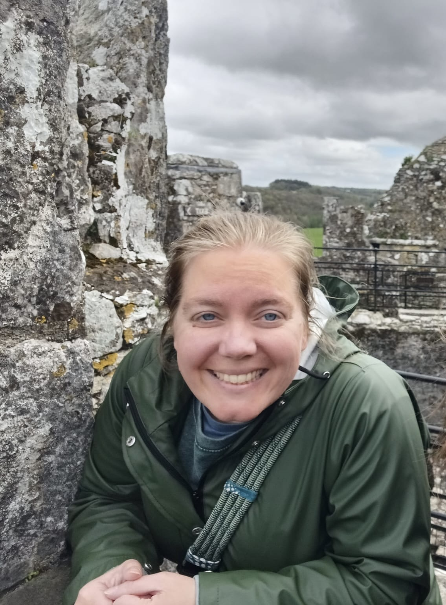

Tamry Blaynne's Resume
About Me
Contact Me

Professional and organized operations coordinator with 8 years experience in the customer relations industry. Experienced in guest relations and office management, adept in web design and maintanence, financial reconciliation, and event registration.
Education
Bachelor of Arts in History
Northland International University, Dunbar, WI
May 2013 | GPA: 3.8
Master of Arts in Biblical Counseling
Bob Jones University (Seminary), Greenville, SC
May 2023 | GPA: 4.0
Work Experience
Operations Coordinator | Bob Jones University, Alumni Relations Department, Greenville, SC | August 2022-Present
- Rebuilt and maintained website (alumni.bju.edu)
- Oversaw and reconciled department budget each month
- Competently answered alumni questions via phone and email daily
- Coordinated alumni publication designs and mailings with BJU Marketing Team
- Managed ticket registration for BJU Homecoming
- Assisted with alumni events throughout the year
Hospitality Professional | Chick-fil-A, Beavercreek, OH | September 2018-June 2021
- Effectively communicated with guests in drive-thru and behind the counter
- Cared for guests during dining experience
- Participated in food prep and facility cleanings
- Trained new employees in drive thru, salad prep and baking tasks
Office Team/Coffee Shop Manager | Northland Camp & Conference Center, Dunbar, WI | August 2016-August 2018
- Managed and maintained coffee shop inventory
- Trained new coffee shop team members
- Regularly balanced and deposited office and coffee shop financials
- Processed mass mailings
- Worked with custodial team to maintain clean and comfortable atmosphere for guests
- Competently registered and housed large groups to guest satisfaction
Office Manager | Wolf Mountain Camp, Grass Valley, CA | August 2014-August 2016
- Operated efficiently with campers, sponsors and parents
- Handled Accounts Receivables and balanced payroll and donations
- Processed payments and donations on a daily basis
- Revamped Receivables and Registration Policies and Procedures manuals
- Worked frequently in both the camp coffee shop and camp store
Volunteer Experience
Team China | Chengdu, China | June - July 2010
- Assisted in classroom instruction of teaching English as a second language
- Interacted and built relationships with Chinese students outside the classroom
Skills
- Worked with Microsoft Word, PowerPoint, Excel, Canva, Word Press Elementor and Sage 50 Accounting
- Experienced in event and camper registration, answering phones and emails
- Proficient with espresso machine, coffee grinder, blender, and cash register
- Competent in helping with food preparation, baking and cooking